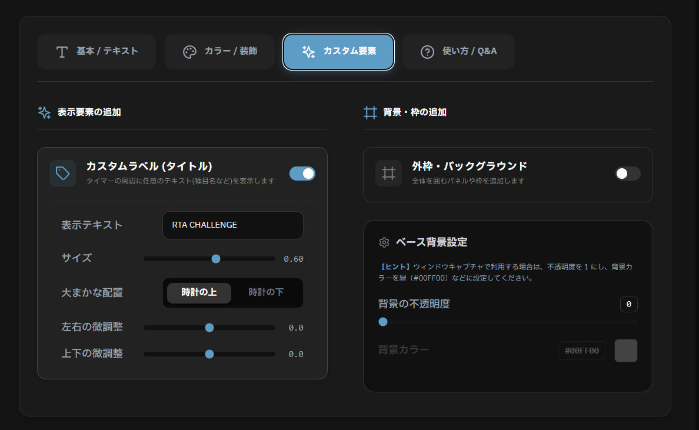

OBSでの誤クリック事故を防ぐ同期システム。
ローカル連携型タイマー生成ツール「NEURA Timer Generator」
配信中の雑談枠やカウントダウンでタイマーを使用する際、誤ってクリックして位置がズレてしまったり、タイマー自体の動作が不安定になったりした経験はありませんか？
「NEURA Timer Generator（ニューラ・タイマー・ジェネレーター）」は、OBS向けの高品質なタイマーHTMLを出力できる専用ツールです。安全なローカルサーバー同期方式（Node.jsベース）を採用することで、配信画面上での誤クリック事故を完全に防ぎ、安定した同期動作を実現します。ZIPファイルを解凍し、ブラウザで直感的にスタイルをカスタマイズするだけで、洗練されたタイマーを即座に導入可能です。

💡 NEURA Timer で解消される3つの配信課題
操作は裏側のローカルコンソールから同期。OBS上で直接触れてしまう事故を構造から防ぎます。
サイバー、モダン、ミニマル、レトロゲーム風など、配信に合わせたフォントやカラーを即座に適用。
必要なHTML、CSS、JSをすべてローカルフォルダ内に内包。安定したアセット読み込みを実現。
01. 🚀 事前準備（Node.js の確認）
NEURA Timer Generator は、ローカル環境で安全かつ軽量にシステムを同期駆動させるため、Node.js環境を利用します。
- あらかじめ Node.js 公式サイト からインストーラーをダウンロードし、PCへインストールしておいてください。
- インストールは、標準設定のまま「次へ」を進めていくだけで簡単に完了します。
02. 🛠️ タイマーデザインと出力手順
配布されたパッケージを展開し、ジェネレーター画面（ツール内UI）をブラウザで開いてカスタマイズを進めます。設定内容はリアルタイムで画面に反映されます。

1. テーマ＆フォントの選択
プリセットからデザインの方向性を選択します。「IBM Plex Sans JP」をはじめとした高視認性のデジタルフォントが自動で組み込まれ、シャープな印象に仕上がります。
2. カラー・不透明度の調整
文字の色、背景のボックスカラー、境界線の色の輝度をカスタム。OBS上で背後のゲームや背景と被っても見やすくなるよう、半透明のシャドウや背景を敷くことができます。
3. 時間・レイアウト構成
カウントダウンの初期値（分・秒）や、タイマー終了時の表示テキストを設定します。レイアウト幅は自動で左上に最適化される構造で作られています。
4. パッケージ書き出し
設定が完了したら、生成ボタンをクリック。ローカル同期に必要なアセット一式が含まれたHTMLおよび構成ファイルをシステムへ適用・保存します。
03. 📺 OBS Studio への導入・設定手順
出力した配信キットを解凍し、ローカルサーバーを介してOBS Studioに同期・読み込ませる手順を解説します。「ローカルファイル」のチェックを外す点と、透過設定が非常に重要です。
ステップ 1：ダウンロードしたZIPの解凍とサーバー起動
- ダウンロードした
obs_timer_kit.zipをお好みの場所に解凍（展開）します。 - フォルダ内にある
start.bat（Mac環境の場合はstart.sh）を実行します。 - 黒い画面（ターミナル）が開き、サーバーが起動します。配信や動作確認を行っている間は、この画面を絶対に閉じないでください。
ステップ 2：OBSでのブラウザソース新規追加
- OBS Studioを起動し、タイマーを追加したい配信シーンの「ソース」エリア下部にある 「＋」ボタン をクリックします。
- メニューから 「ブラウザ」 を選択し、識別しやすい名前（例: NEURA_Timer）を入力して「OK」を押します。
ステップ 3：同期URLの指定（ローカルファイルはオフ）
- ソースのプロパティ画面が開いたら、上部にある 「ローカルファイル」のチェックボックスを必ずオフ（未チェック） にします。
- URL入力欄に
http://localhost:8080/displayと入力します。
ステップ 4：解像度（サイズ）のバッファ拡張
- プロパティの 「幅」 と 「高さ」 に、タイマーの想定サイズよりも一回り余裕を持たせた大きめの数値（例：幅「800」、高さ「400」など）を入力します。
- HTML側で自動的に左上に寄せて描画される構造のため、OBS側の割り当て枠（解像度バッファ）を十分に広げておくことで、タイマーの端が切れたり、はみ出したりする現象を防げます。
ステップ 5：【重要】カスタムCSSの消去による透過処理
プロパティ内を下へスクロールし、最初から「カスタムCSS」欄に記述されている既存のコード（bodyの背景色指定など）を すべて選択して完全に消去し、空欄にしてください。
この記述を消去しないと、タイマーの周囲が不要な背景色で塗りつぶされてしまい、背後のゲーム画面や配信映像が綺麗に透過されなくなります。
ステップ 6：コントロールパネルからの操作・同期完了
- 「OK」をクリックしてプロパティを閉じると、OBSのプレビュー上にタイマーが透過表示されます。
- 普段お使いのWebブラウザ（Google Chrome等）で
http://localhost:8080/を開きます。 - ブラウザ上の操作パネルから「Start」「Stop」「Reset」を実行すると、OBS側のタイマー表示がリアルタイムで安全に完全同期連動します。
04. 🟢 別の方法：初心者向けの簡易導入（ウィンドウキャプチャ方式）
「Node.jsの準備やサーバーの起動手順が少し難しそう…」と感じる場合は、ジェネレーター画面を直接OBSに取り込む「ウィンドウキャプチャ」と「クロマキー機能」を組み合わせた簡易的な導入方法も利用可能です。

ステップ 1：ジェネレーター側で背景を「緑色」に設定する
- ジェネレーター画面の「背景・枠の追加」タブを開きます。
- 「背景の不透明度」を最大（1）にスライドさせます。
- 「背景カラー」をクリックし、クロマキーで透過しやすい鮮やかな緑色（例：#00ff00）を選択します。プレビューの背景が全面緑色に変われば準備完了です。
ステップ 2：OBSにウィンドウキャプチャを追加する
- OBSの「ソース」エリア左下の「＋」ボタンをクリックし、「ウィンドウキャプチャ」を選択します。
- キャプチャするウィンドウに対象のブラウザ（例：
[chrome.exe]: NEURA ...）を指定し、ジェネレーターのプレビュー画面がOBS上に映るようにします。
ステップ 3：不要な部分を切り抜く（クロップ）
- OBSのプレビュー画面上で、追加したウィンドウキャプチャのソースを、キーボードの Altキーを押しながら端の点をドラッグ します。
- ブラウザの余計なタブや設定パネルを削り、緑色背景のタイマー部分だけが見えるように四隅を切り抜きます。
ステップ 4：クロマキーフィルタで背景を透明にする
- 追加したウィンドウキャプチャのソースを右クリックし、「フィルタ」を選択します。
- エフェクトフィルタの左下にある「＋」ボタンから「クロマキー」を追加します。
- 色キーの種類で「緑」を選択すると、タイマー周囲の緑色の背景が一瞬で綺麗に消え、背後のゲーム画面やカメラ映像が透過されます。
ステップ 5：操作・運用
あとは、ブラウザ（ジェネレーター画面）の下部にある「動作確認用パネル」の Start / Stop / Reset ボタンを直接クリックして動かすだけで、配信画面上のタイマーがリアルタイムに連動します。
Q. Node.jsって何？どうやって入れるの？
タイマーをバックグラウンドで安全かつ正確に同期駆動するための軽量な実行環境システムです。公式サイトから推奨版のインストーラーを入手し、基本設定のままインストールするだけで準備は完了します。
Q. タイマーの右端や下部が切れて表示されてしまう
OBSのブラウザソースのプロパティを開き、「幅」と「高さ」のピクセル数値を現在の設定よりも一回り大きめに変更してください。HTMLは自動的に左上を基準点として綺麗に描写されるため、OBS側の枠そのものを広げることで全体が正常に表示されるようになります。